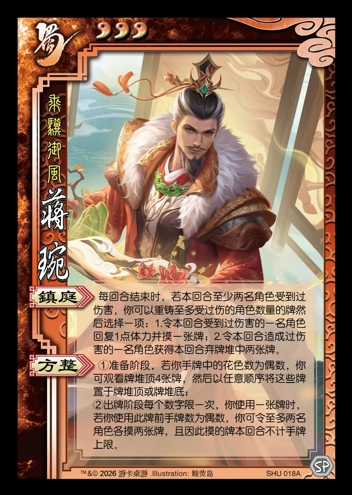

点击卡面查看大图
蜀
蒋琬
♥3乘骥御风
镇庭
每回合结束时，若本回合至少两名角色受到过伤害，你可以重铸至多受过伤的角色数量的牌然后选择一项：1.令本回合受到过伤害的一名角色回复1点体力并摸一张牌；2.令本回合造成过伤害的一名角色获得本回合弃牌堆中两张牌。
方整
①准备阶段，若你手牌中的花色数为偶数，你可观看牌堆顶4张牌，然后以任意顺序将这些牌置于牌堆顶或牌堆底；
②出牌阶段每个数字限一次，你使用一张牌时，若你使用此牌前手牌数为偶数，你可令至多两名角色各摸两张牌，且因此摸的牌本回合不计手牌上限。